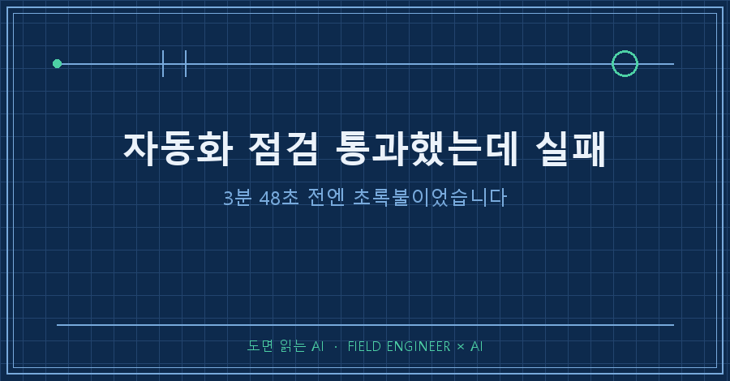
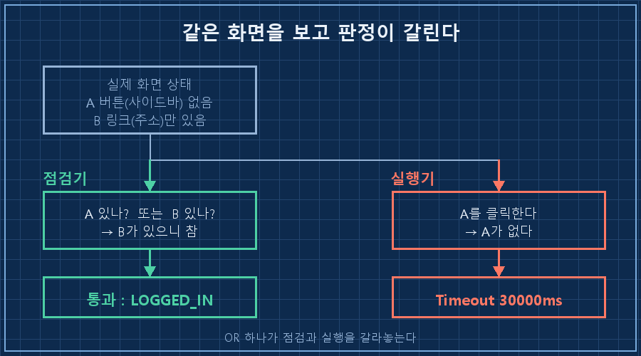
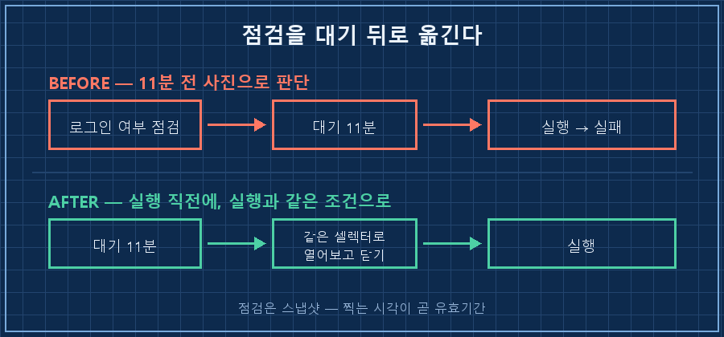

상태 점검이 "로그인 정상"이라고 했습니다. 3분 48초 뒤에 같은 브라우저에서 실행이 실패했어요. 저녁에 한 번 더 돌렸는데 또 같은 자리에서 멈췄고요.
결론부터 적을게요.
자동화 점검 통과했는데 실패한다면, 십중팔구 점검이 실행과 다른 것을 봤거나 점검과 실행 사이에 시간이 흘렀기 때문입니다. 점검은 "지금 로그인돼 있나"가 아니라 실행이 쓸 경로가 지금 열려 있나를 물어야 해요.
제가 하는 일은 제조 설비의 제어 쪽입니다. 15년째요.
설비에는 운전 가능 램프라는 게 있어요. 그 램프가 실제 운전 조건을 다 안 보고 켜지면, 조작반은 초록인데 설비는 안 도는 상황이 생깁니다. 현장에서 제일 골치 아픈 고장이 이거예요. 안 도는 게 문제가 아니라 왜 안 도는지 아무도 못 찾는 상태가 되거든요.
그걸 제 PC에다 똑같이 만들어 놨더라고요..
2026년 8월, 윈도우 PC에서 브라우저를 조종해 SNS에 글을 자동으로 올리는 개인 스크립트 얘기입니다. 특정 도구 문제가 아니라 "점검하고 나서 실행하는" 구조면 다 해당돼요.
1. 점검은 초록불, 4분 뒤 실패
8월 24일 오전 로그입니다. 앞쪽은 상태 점검 결과예요.
11:00:20 "url": "https://x.com/home",
11:00:20 "composeBtn": true,
11:00:20 "accountBtn": false,
11:00:20 "loginBtn": false,
11:00:20 "handle": ""
11:00:20 RESULT: LOGGED_IN판정은 통과. 그리고 몇 분 뒤 실제 발행이 이렇게 끝났습니다.
11:04:08 ERROR: locator.click: Timeout 30000ms exceeded.
11:04:08 Call log:
11:04:08 - waiting for locator('[data-testid="SideNav_NewTweet_Button"]')
11:04:08 ERROR: 발행 실패버튼 하나를 30초 동안 기다리다 포기한 겁니다. 저녁 8시에 자동으로 한 번 더 시도했는데 20시 05분 23초에 토씨 하나 안 틀리고 같은 에러가 났어요. 그날 올라간 글은 0건입니다.
2. 점검기와 실행기가 서로 다른 버튼을 보고 있었어요
점검 스크립트에서 이 줄을 찾았습니다.
composeBtn: has('[data-testid="SideNav_NewTweet_Button"]')
|| has('a[href="/compose/post"]'),또는(||)이 들어가 있죠. 왼쪽이 없어도 오른쪽만 있으면 참입니다.
그런데 발행 스크립트는 이렇게 클릭해요.
await page.locator('[data-testid="SideNav_NewTweet_Button"]').first().click();왼쪽 하나만 씁니다. 점검은 둘 중 아무거나 있으면 통과시키고, 실행은 특정 하나를 요구하는 구조였어요. 두 파일을 다른 날 만들어놓고, 그 사이를 한 번도 맞춰본 적이 없었습니다.
증거는 같은 로그 안에 이미 있었고요. accountBtn이 false, handle이 빈 문자열이었잖아요. 화면 왼쪽 메뉴가 제대로 안 그려졌다는 뜻입니다. 그런데 로그인 판정식이 이렇게 생겼어요.
const loggedIn = (info.composeBtn || info.accountBtn) && !info.loginBtn && ...여기도 또는입니다. 둘 중 하나만 참이면 초록불이에요. 사이드바가 반쪽만 그려졌다는 신호를 제가 판정식에서 스스로 지운 셈이죠.

3. 두 번째 함정은 점검과 실행 사이의 시간이었어요
8월 20일 로그를 보다가 다른 패턴을 하나 더 찾았습니다. 이날 점검 결과는 완벽했어요.
11:00:21 "accountBtn": true,
11:00:21 "handle": "(내 계정)"
11:00:21 RESULT: LOGGED_IN
11:00:21 지터 11.1분사이드바도 계정 이름도 다 잡혔습니다. 그런데 11분 8초 뒤,
11:11:29 ERROR: browserType.connectOverCDP:
connect ECONNREFUSED 127.0.0.1:9222브라우저가 통째로 사라져 있었어요.
봇 티가 안 나게 실행 시각을 랜덤하게 미루는 장치를 넣어뒀는데(지터라고 부릅니다), 하필 그 대기 시간이 점검과 실행 사이에 끼어 있었던 겁니다. 점검은 스냅샷이에요. 11분 전에 찍은 사진을 보고 지금을 판단한 거죠.
4. 실패 12건을 세어보니 전부 초록불 다음이었습니다
로그 37일치를 전부 열어서 실패를 유형별로 세어봤어요.
| 실패 유형 | 건수 | 로그에 찍힌 문구 |
|---|---|---|
| 브라우저가 사라짐 | 7 | connect ECONNREFUSED 127.0.0.1:9222 |
| 클릭할 버튼이 없음 | 2 | locator.click: Timeout 30000ms exceeded |
| 브라우저 팝업에 걸림 | 2 | Page.handleJavaScriptDialog |
| 게시 버튼이 잠김 | 1 | element is not enabled |
37일 중 10일에서 12건이 실패했고, 그 10일 전부 직전 점검 결과가 로그인 정상이었습니다. 자동화 점검 통과했는데 실패한 날이 열흘인데, 점검은 한 번도 그걸 예고하지 못한 거예요..
이건 제가 전에 적었던 "끝나고 나서 성공이라고 찍힌 로그"와는 다른 축입니다. 그때는 사후 기록이 거짓말을 했고, 이번엔 사전 점검이 거짓말을 했어요. 방향만 반대지 원인은 같습니다. 판정 기준이 실제 동작과 따로 놀았다는 것.
5. 그래서 이렇게 고치려고 합니다 (아직 안 고쳤어요)
솔직히 적자면 오늘 기준으로 코드는 아직 그대로입니다. 원인만 잡아둔 상태예요. 손볼 순서는 이렇게 정했습니다.

1. 점검이 보는 조건과 실행이 쓰는 조건을 같은 셀렉터로 통일합니다. 또는(||)은 뺍니다. 실행이 A만 쓰면 점검도 A만 봐야죠.
2. 점검을 대기 시간 뒤로 옮깁니다. 지금은 점검하고 11분 쉬고 실행인데, 쉬고 나서 점검하고 바로 실행이 맞아요.
3. 점검을 "있나 없나"가 아니라 "열리나"로 바꿉니다. 창을 실제로 띄워보고 닫는 데까지 가봐야 진짜 점검이에요.
4. 실패하면 알림이 오게 합니다. 이번엔 이틀이 지나서야 로그를 뒤지다 알았거든요..
이런 게 궁금하실 것 같아서
Q. 그냥 재시도를 넣으면 되지 않나요?
브라우저가 잠깐 없었던 경우엔 그게 맞습니다. 다만 8월 24일처럼 화면 구조 자체가 다르게 그려진 날은 백 번 재시도해도 같은 자리에서 30초씩 기다리다 끝나요. 재시도는 일시적인 문제를 덮는 장치지, 조건이 어긋난 걸 고쳐주지는 못합니다.
Q. 점검을 아예 빼면 더 단순하지 않나요?
저도 잠깐 그 생각을 했어요. 그런데 점검을 빼면 로그인이 풀린 날에 스크립트가 로그인 화면에다 글을 입력하려 듭니다. 점검이 있는 게 문제가 아니라 점검이 엉뚱한 걸 보는 게 문제라, 없애는 쪽이 아니라 조준을 옮기는 쪽이 맞더라고요.
정리하면 이렇습니다. 점검이 통과했는데 실행이 실패하면 스크립트보다 점검을 먼저 의심하세요. 보는 대상이 다르거나, 보는 시각이 다르거나 둘 중 하나입니다.
자동화에 상태 점검을 붙여두셨다면 한 가지만 확인해보세요. 그 점검이 통과시킨 조건과, 실제로 실패하는 그 줄이 같은 것을 보고 있나요? 저는 두 파일이 서로 다른 걸 보고 있다는 걸 두 달 만에 알았습니다.
이런 뒤늦은 깨달음은 makefield.ai에 그때그때 던져둡니다.
태그: #자동화점검 #자동화실패원인 #헬스체크설계 #셀렉터클릭안됨 #브라우저자동화 #playwright에러 #자동화디버깅 #무인자동화 #파이썬자동화 #자동게시실패 #AI에이전트 #개인AI에이전트 #AI에게일시키기 #현장엔지니어 #도면읽는AI